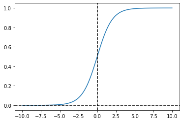
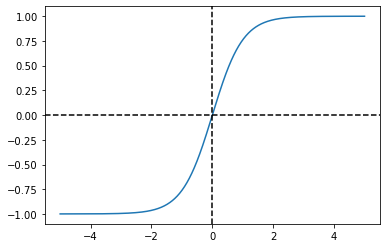
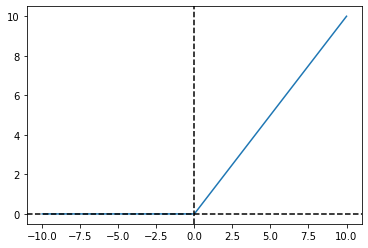
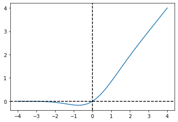
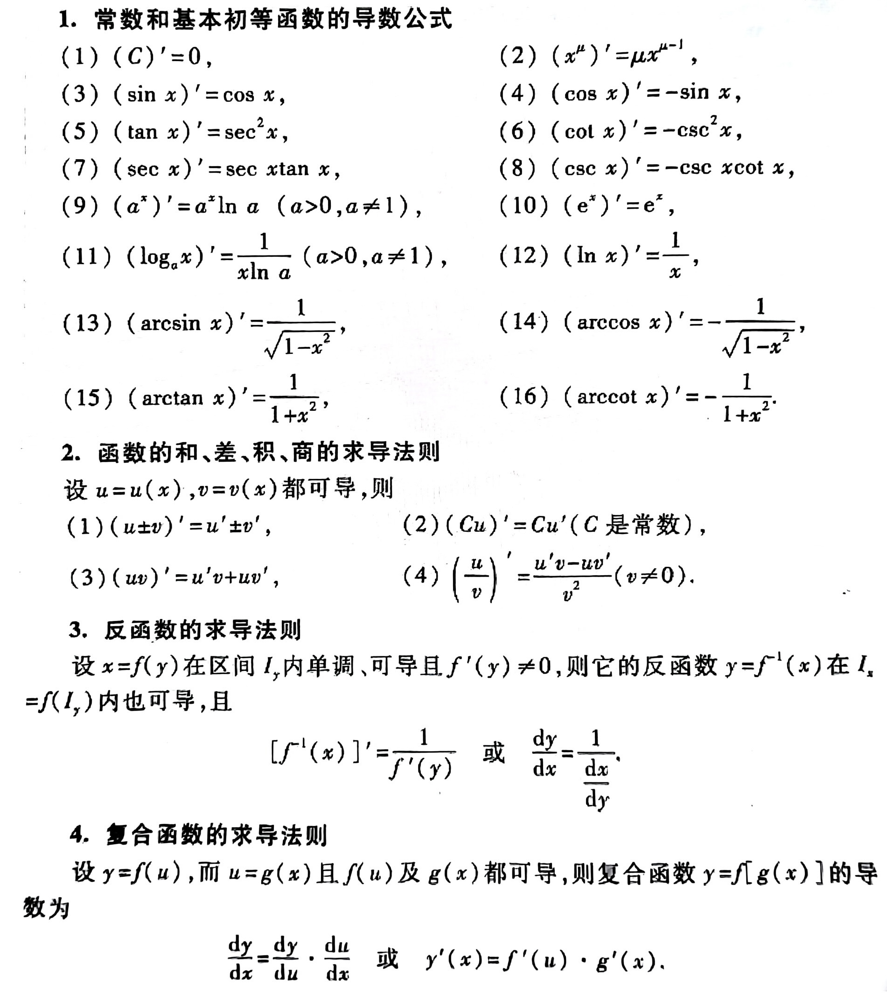

1. 说一下了解的激活函数和各自的应用场景
-
sigmoid: $$ \sigma(x)=\frac{1}{1+e^{-x}} $$ sigmoid是第一个被广泛应用于神级网络的激活函数，其值域为$[0,1]$，但是它存在输出均值不为0和梯度消失的问题，在深层网络中被其他激活函数替代。在逻辑回归中使用该激活函数用于输出分类。 -
tanh: $$ tanh(x)=\frac{e^x-e^{-x}}{e^x+e^{-x}}=2\sigma(2x)-1 $$ tanh函数解决了sigmoid函数均值不为0的情况，值域为$[-1,1]$，但仍然存在梯度消失的问题。在LSTM中使用了tanh。 -
ReLU: $$ ReLU(x)= \begin{cases} x,\ x\geq0\\\ 0,\ x<0\ \end{cases} $$ ReLU函数能有效避免梯度消失的问题，但在负值区域处于饱和状态（“死区”）。Alex-Net使用了ReLU，在使用深层网络时最好使用ReLU而不是sigmoid。 -
Leaky ReLU： $$ Leaky\ ReLU(x)= \begin{cases} x,\ x\geq0\\\ \alpha\cdot x,\ x<0 \end{cases} $$
Leaky ReLU在负值区添加了一个斜率参数，缓解了饱和性问题（“死区”）。但缺点是超参数$\alpha$的合适值不好设定，当我们想让神经网络学习到负值区的信息时可以使用该函数。 -
参数化ReLU(P-ReLU)：解决超参数$\alpha$不好设定的问题，将其作为模型参数融入到模型的训练过程中，在反向传播时更新参数。 -
随机化ReLU(R-ReLU)：随机化超参数$\alpha$，使不同的层学习不同的参数。其随机化参数的分布符合均匀分布或高斯分布。 -
ELU： $$ ELU(x)= \begin{cases} x,\ x\geq0\\\ \lambda\cdot(e^x-1),\ x<0 \end{cases} $$ 解决饱和性问题，但缺点是指数计算量大。 -
GELU： $$ GELU(x)=x\text{P}(\text{X}\leq x)=x\Phi(x) $$ 
其中$\Phi(x)$是正态分布的概率函数，计算时近似计算的数学公式如下： $$ GELU(x)=\frac{1}{2}x(1+tanh[\sqrt{\frac{2}{\pi}}(x+0.044715x^3)]) $$
2. 为什么需要激活函数？
在线性模型中引入非线性激活函数，可以使线性模型非线性化，提高模型的非线性表达能力，也就是拟合能力。
3. 激活函数的特征？
- 非线性性
- 几乎处处可微
- 计算简单
- 单调性：符号不变容易收敛
- 非饱和性：饱和指在某些区间的梯度接近零，即梯度消失，使得参数无法继续更新
- 输出范围有限
- 接近恒等变换
- 参数少
4. Leaky ReLU相对于ReLU的优势在哪？
Leaky ReLU在负值增加了一个斜率$\alpha$，缓解了ReLU在$x<0$时的饱和性问题(“死区”，梯度消失)，但Leaky ReLU得超参数$\alpha$的合适值不好设定。
当我们想让神经网络能够学到负值信息时可以使用该激活函数。
5. 什么是ReLU6？
ReLU的值域为$[0,\infty]$，在实际应用中需要限定输出的最大值，将输出在6处截断，即为ReLU6。
6. Sigmoid函数有什么缺点？怎么解决？
缺点：输出均值不为0，存在梯度消失的情况。
解决办法：
- 用
ReLU，Leaky ReLU等其他激活函数代替 - 采用适合的权重初始化方法，如
He_init - 在分类问题中，
sigmoid作为激活函数时，用交叉熵损失函数替代MSE - 加入BN层
- 分层训练权重
7. ReLU在零点可导吗？如何进行反向传播？
不可导，可以人为的将零点梯度规定为0。
caffe源码~/caffe/src/caffe/layers/relu_layer.cpp倒数第十行代码如下：
bottom_diff[i] = top_diff[i] * ((bottom_data[i] > 0)+ negative_slope * (bottom_data[i] <= 0));
可见，间断点（$\leq0$）处的导数为negtive_slope（默认为0）。
8. Softmax的溢出问题怎么解决？
由于Softmax的指数运算，可能导致溢出问题。
令$M=\max(x_i)$，将计算$f(x_i)$转换为计算$f(x_i-M)$的值，就可以解决溢出问题了，且理论上计算结果与计算$f(x_i)$保持一致，该操作类似与Min-Max归一化。
9. 推导Sigmoid的求导公式
sigmoid公式如下：
$$ \sigma(z)=\frac{1}{1+e^{-z}} $$
求导公式推导如下：
10. 推导Softmax的求导公式
softmax公式如下： $$ s(z_i)=\frac{e^{z_i}}{\sum_{k=1}^{n}{e^{z_k}}} $$ 求导公式推导如下：
- 当$j=i$时：
- 当$j\neq i$时：
p.s.基本初等函数的求导公式与法则
